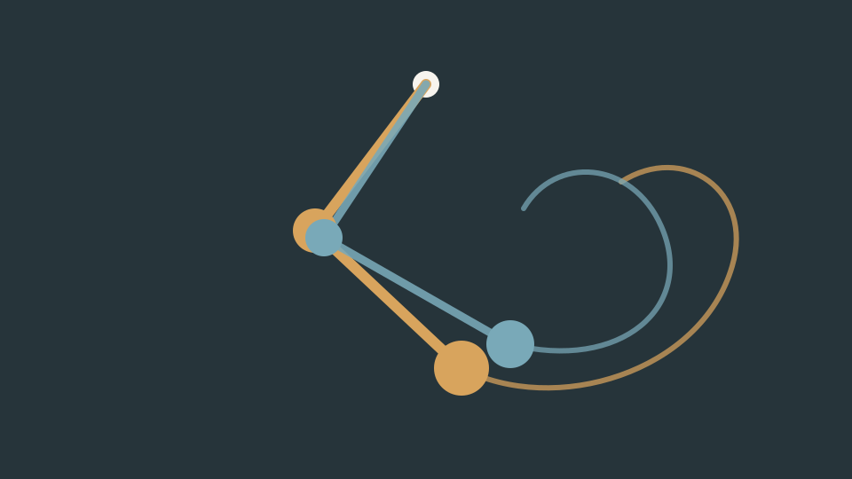

Pendolo doppio
Imposta lunghezze e angoli iniziali. Aggiungi un secondo sistema quasi identico e osserva come le traiettorie divergono.
Apri il laboratorio →Qui puoi modificare i parametri di alcuni sistemi fisici e matematici e osservarne direttamente il comportamento. Il laboratorio crescerà nel tempo: si comincia con uno dei sistemi più semplici da descrivere e più imprevedibili da seguire.